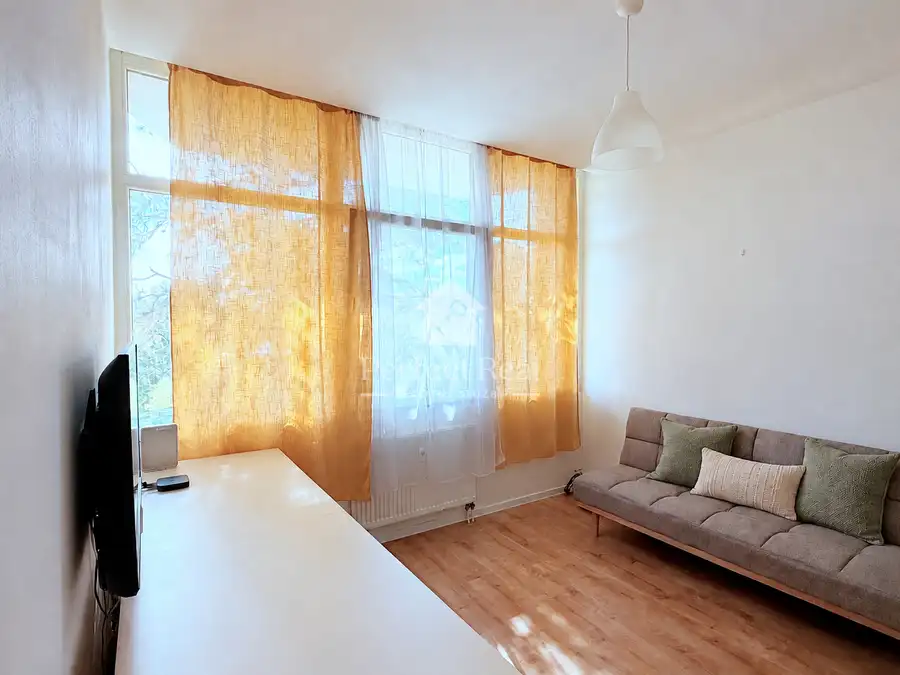
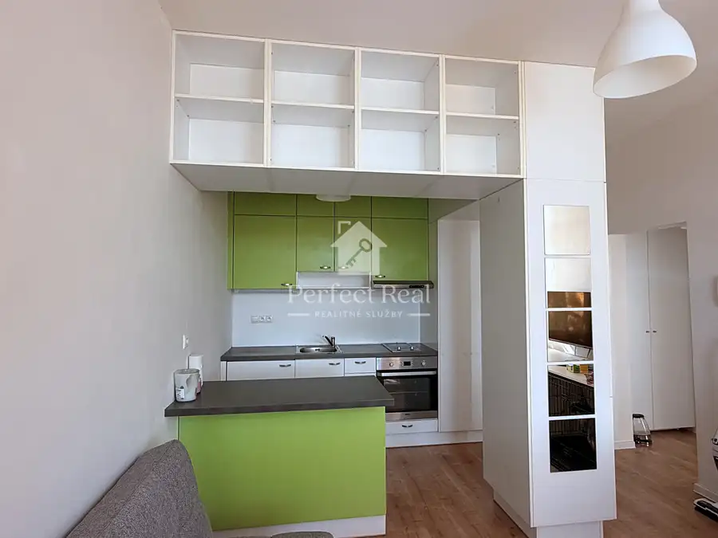
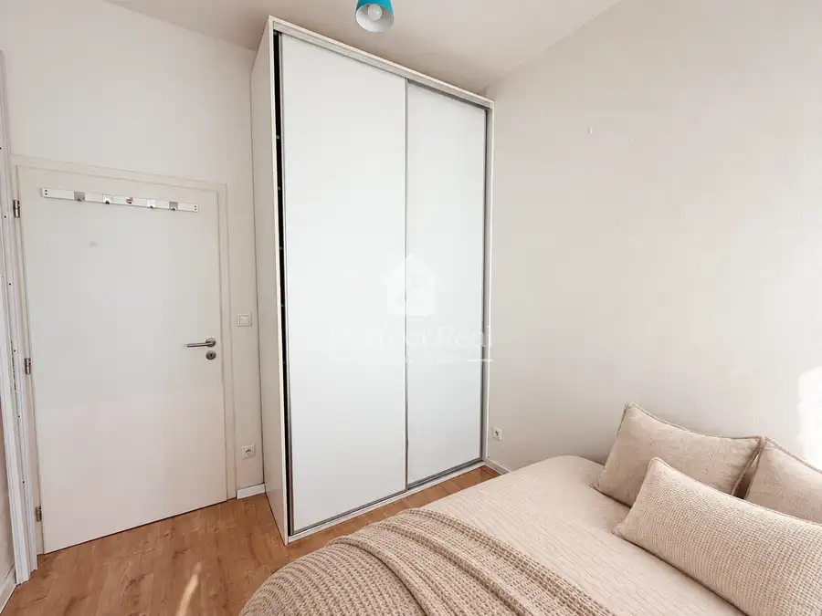
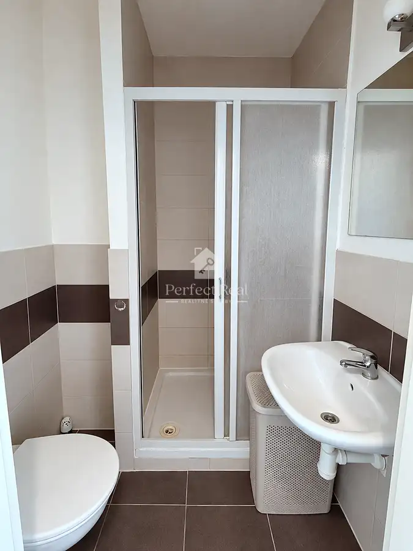
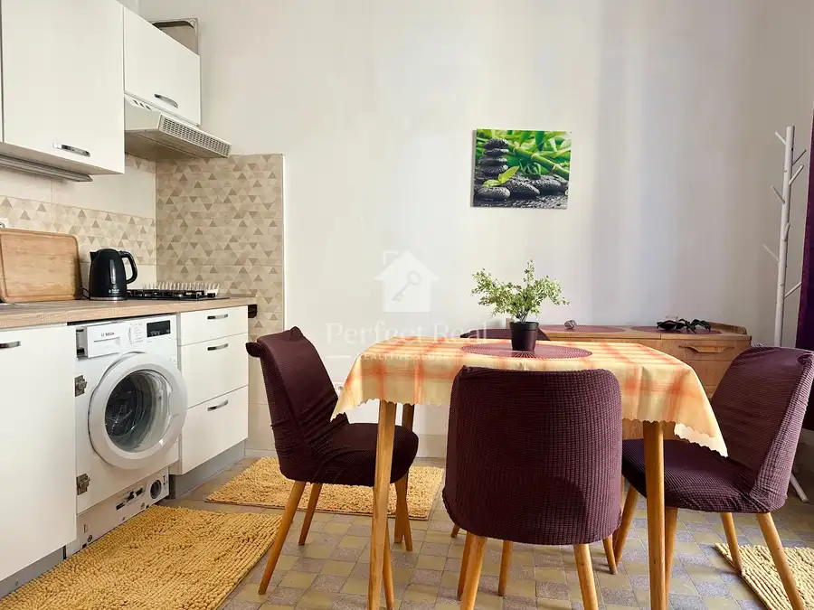

Predaj 2izbový byt Vlčie hrdlo
Ružinov, Bratislava





- Dispozícia2-izbový
- Plocha32.47 m²
- Poschodie2.
- StavKompletná rekonštrukcia
- VlastníctvoOsobné
O nehnuteľnosti
V zastúpení majiteľa ponúkame exkluzívne na predaj velmi dobre riešený zrekonštruovaný 2 izbový byt vo Vlčom hrdle.Nachádza sa na 3podlaží.Bytový dom je po kompletnej rekonštrukcii z roku 2013 - je zateplený, kamerový systém v interiéri aj na exteriér, upratovanie spoločných priestorov.Nachádzajú sa tu 2 osobné výťahy. Na každom poschodí je 6 bytov. Na poschodí je taktiež situovaný skladový priestor/pivnica/ o veľkosti 1,8m.Rozloha nehnutelnosti je 30,67m plus pivnica 1,8m.Byt je velmi dobre dispozične riešený, vstupná chodba, kuchyňa opticky predelená s obývacou časťou, samostatná spálňa s rolldorom a kúpeľňa so sprchovým kútom a wc. Byt má vysoké stropy 2,65m.Izby sú priestranné - spálňa je o veľkosti cca 8,2m, obývačka s kuchyňou cca 19m. V byte je plávajúca podlaha, plastové okná, v spálni rolldor. V kuchyni elektrická varná doska zn. Beko a elektrická rúra.Mesačné náklady predstavujú čiastku 100,-Eur pre 1osobu /správca bytového domu + elektrina/, internet od UPC 14,-Eur.Parkovanie je bezproblémové v okolí bytového domu. Priamo pred domom sú súkromné parkovacie miesta, v okolí je dostatok verejných miest bez poplatku.Bytový dom sa nachádza v lokalite Vlčie hrdlo v mestskej časti Bratislava – Ružinov, ktorá ponúka spojenie dostupnosti do mesta, s množstvom zelene a možnosťami aktívneho oddychu.V blízkom okolí sa nachádzajú potraviny, lekáreň, reštaurácie, športoviská, plaváreň, školy a ďalšie služby. Výhodou je aj dobrá dostupnosť MHD – v pešom dosahu sú autobusové zastávky s pravidelným spojením do ďalších častí Bratislavy.Milovníci športu a prírody ocenia najmä blízkosť Malého Dunaja, cyklotrasy a možnosti prechádzok či behu. Lokalita zároveň poskytuje dobré napojenie na hlavné dopravné ťahy a bratislavský obchvat.Cena ponúkanej nehnuteľnosti je 135.000,-Eur vrátane provízie pre RK. Pri kúpe nehnuteľnosti zabezpečíme kompletný realitný a právny servis, aby celý proces prebehol bezpečne, hladko a bez zbytočných starostí.V rámci našich služieb zabezpečíme prípravu rezervačnej a kúpnej zmluvy, kompletnú zmluvnú dokumentáciu, komunikáciu s príslušnými inštitúciami, ako aj súčinnosť pri financovaní kúpy. Kupujúcemu vieme pomôcť aj s vybavením hypotekárneho úveru prostredníctvom nášho skúseného finančného poradcu.Samozrejmosťou je asistencia pri odovzdaní nehnuteľnosti, vyhotovenie odovzdávacieho protokolu a pomoc s prepisom energií a služieb na nového vlastníka.Sme vám k dispozícii počas celého procesu kúpy – od rezervácie až po úspešné odovzdanie nehnuteľnosti.V prípade, že Vás táto ponuka zaujala, neváhajte nás kontaktovať na tel. číslo 0903 203 289 alebo emailom: monika.canova@perfect-real.sk
Parametre
- Cena vrátane energií
- Nie
- Druh
- 2 izbový byt
- Dátum zverejnenia
- 07. 10. 2026
- Podlažie
- 2
- Počet izieb / miestností
- 2
- Rok kolaudácie
- 2013
- Rok poslednej rekonštrukcie
- 2013
- Stav nehnuteľnosti
- Kompletná rekonštrukcia
- Typ
- Predaj
- Vlastníctvo
- Osobné
- Vybavenie
- Sklad
- Úžitková plocha
- 32.47 m²
Kde to je


Mohlo by Vás zaujímať
 BytNové
329 000 €Predaj priestranný byt 130m² + terasa 40m² s veľkým potenciálom!!!
Dúbravka, Bratislava
4-izbový126.75 m²
BytNové
329 000 €Predaj priestranný byt 130m² + terasa 40m² s veľkým potenciálom!!!
Dúbravka, Bratislava
4-izbový126.75 m²
 BytNové
159 000 €Nebytový priestor (ako 2-izbový byt) Bratislava
Dúbravka, Bratislava
2-izbový76 m²
BytNové
159 000 €Nebytový priestor (ako 2-izbový byt) Bratislava
Dúbravka, Bratislava
2-izbový76 m²

BytNové Cena na vyžádáníPerfektná poloha - Garsónka na prenájom s balkónom Staré Mesto, Bratislava 33.6 m²4. podlažie